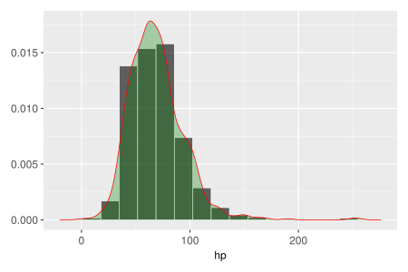
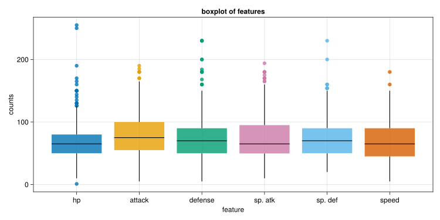
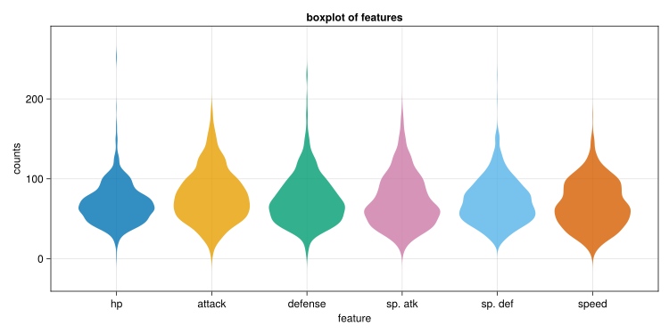

using Makie
include("../utils.jl") # import load_csv method(marker = :circle, markersize = 12, color = (:green, 0.2), strokewidth = 1, strokecolor = :black)math4mads
December 15, 2023
| Row | # | name | type 1 | type 2 | total | hp | attack | defense | sp. atk | sp. def | speed | generation | legendary |
|---|---|---|---|---|---|---|---|---|---|---|---|---|---|
| Int64 | String31 | String15 | String15? | Int64 | Int64 | Int64 | Int64 | Int64 | Int64 | Int64 | Int64 | Bool | |
| 1 | 1 | Bulbasaur | Grass | Poison | 318 | 45 | 49 | 49 | 65 | 65 | 45 | 1 | false |
| 2 | 2 | Ivysaur | Grass | Poison | 405 | 60 | 62 | 63 | 80 | 80 | 60 | 1 | false |
| 3 | 3 | Venusaur | Grass | Poison | 525 | 80 | 82 | 83 | 100 | 100 | 80 | 1 | false |
| 4 | 3 | VenusaurMega Venusaur | Grass | Poison | 625 | 80 | 100 | 123 | 122 | 120 | 80 | 1 | false |
| 5 | 4 | Charmander | Fire | missing | 309 | 39 | 52 | 43 | 60 | 50 | 65 | 1 | false |
| Row | variable | nmissing | eltype |
|---|---|---|---|
| Symbol | Int64 | Type | |
| 1 | # | 0 | Int64 |
| 2 | name | 0 | String31 |
| 3 | type 1 | 0 | String15 |
| 4 | type 2 | 386 | Union{Missing, String15} |
| 5 | total | 0 | Int64 |
| 6 | hp | 0 | Int64 |
| 7 | attack | 0 | Int64 |
| 8 | defense | 0 | Int64 |
| 9 | sp. atk | 0 | Int64 |
| 10 | sp. def | 0 | Int64 |
| 11 | speed | 0 | Int64 |
| 12 | generation | 0 | Int64 |
| 13 | legendary | 0 | Bool |
plt = data(df) * mapping(:hp)
layers = visual(Hist;normalization=:pdf,bin=10,strokewidth=1,strokecolor=:white) +visual(Density;color=(:green,0.3),strokewidth=1,strokecolor=:red)
with_theme(theme_ggplot2(), resolution = (600,400)) do
layers*plt|> draw
end
function plot_features_boxplot(df::AbstractDataFrame)
row,col=size(df)
features=names(df)
fig=Figure(resolution=(1000,500))
ax=Axis(fig[1,1],title="boxplot of features")
ax.xlabel="feature";ax.ylabel="counts"
ax.xticks=(1:col,features)
for (idx,col) in enumerate(collect(eachcol(df)))
boxplot!(ax,fill(idx,row),col)
end
fig
end
plot_features_boxplot(df[:,6:11])
function plot_features_violin(df::AbstractDataFrame)
row,col=size(df)
features=names(df)
fig=Figure(resolution=(1000,500))
ax=Axis(fig[1,1],title="boxplot of features")
ax.xlabel="feature";ax.ylabel="counts"
ax.xticks=(1:col,features)
for (idx,col) in enumerate(collect(eachcol(df)))
Makie.violin!(ax,fill(idx,row),col)
end
fig
end
plot_features_violin(df[:,6:11])